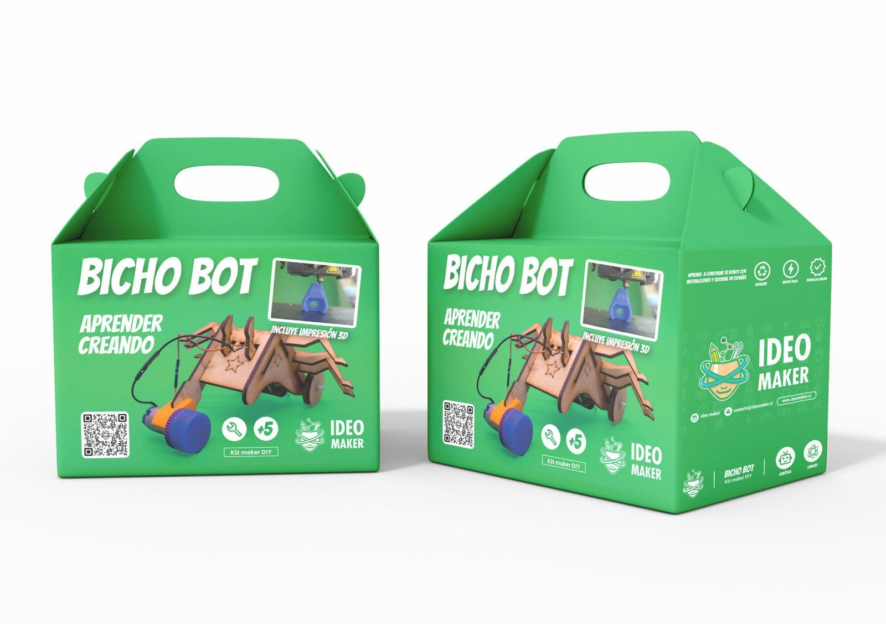

Un robot pedagógico que nació en cartón para los talleres y se convirtió en un kit de MDF, diseñado para fabricarse y calzar en su caja.

Bicho-bot nació en julio de 2022 como robot pedagógico para los talleres de Ideo Maker, hecho en cartón. Servía para enseñar, pero no se podía vender.
En 2023 lo transformamos en un kit. Se mejoró y se actualizó, pasó del cartón al MDF, y se diseñaron las piezas y la gráfica para que se pudiera fabricar y calzara en la caja. Pasar de prototipo de taller a producto no es cambiar de material: es resolver todo lo que el taller perdonaba y una caja no.
Desde entonces es el taller que Ideo Maker lleva a cada actividad de Congreso Futuro en tu comuna, en liceos y hospitales.